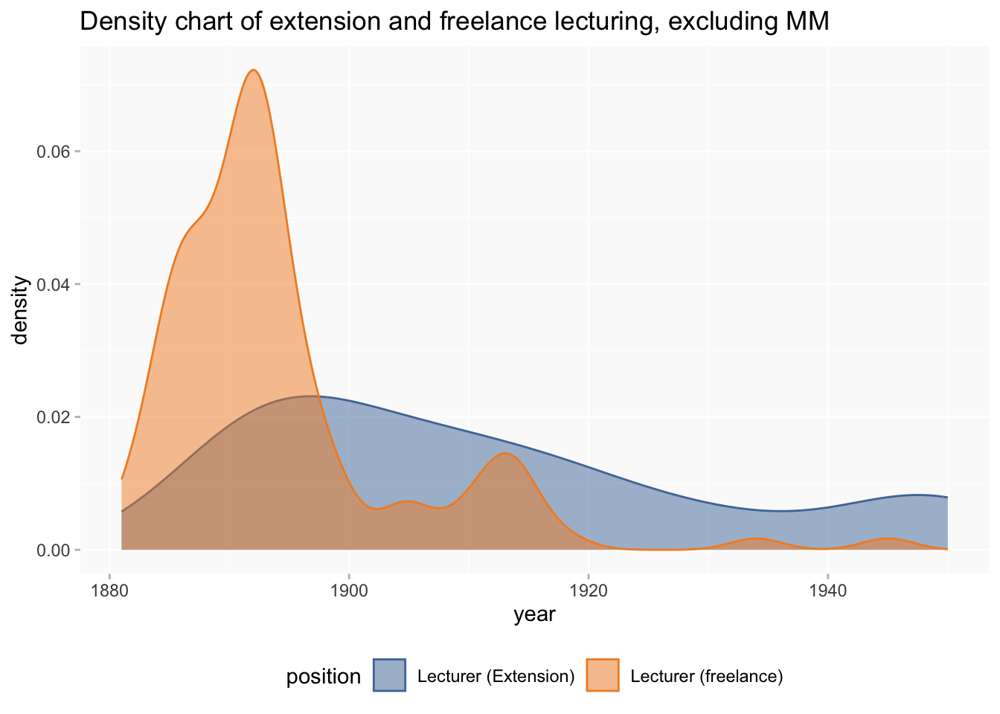
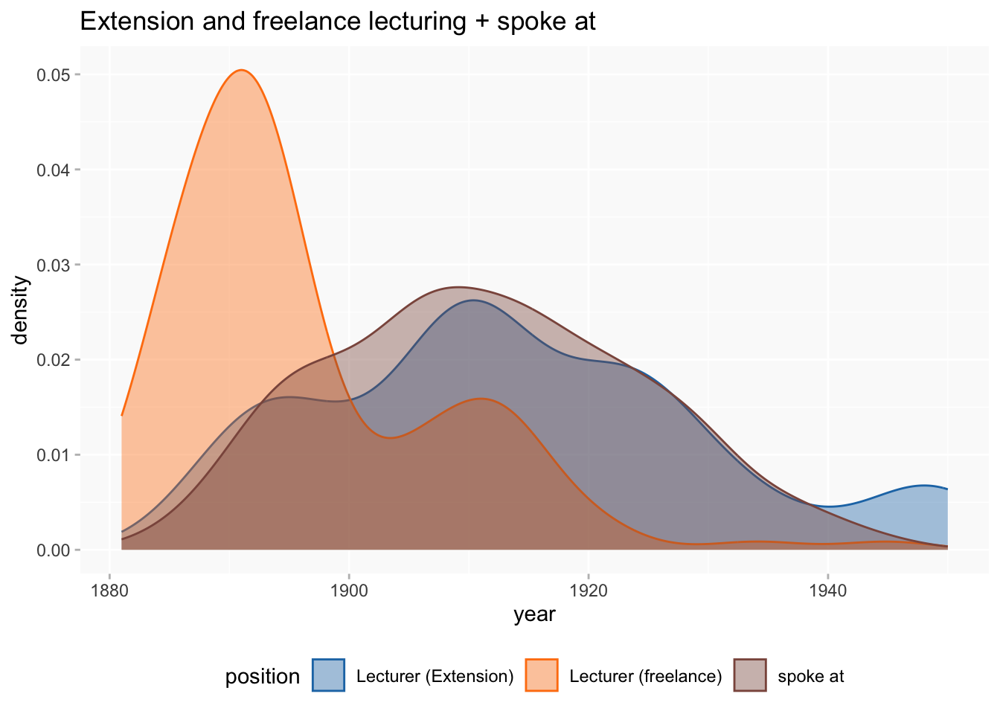
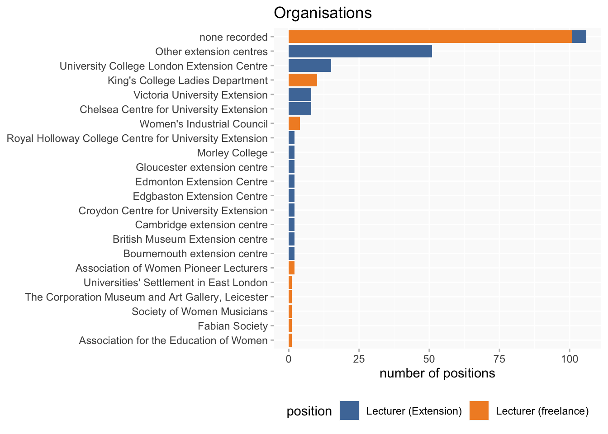
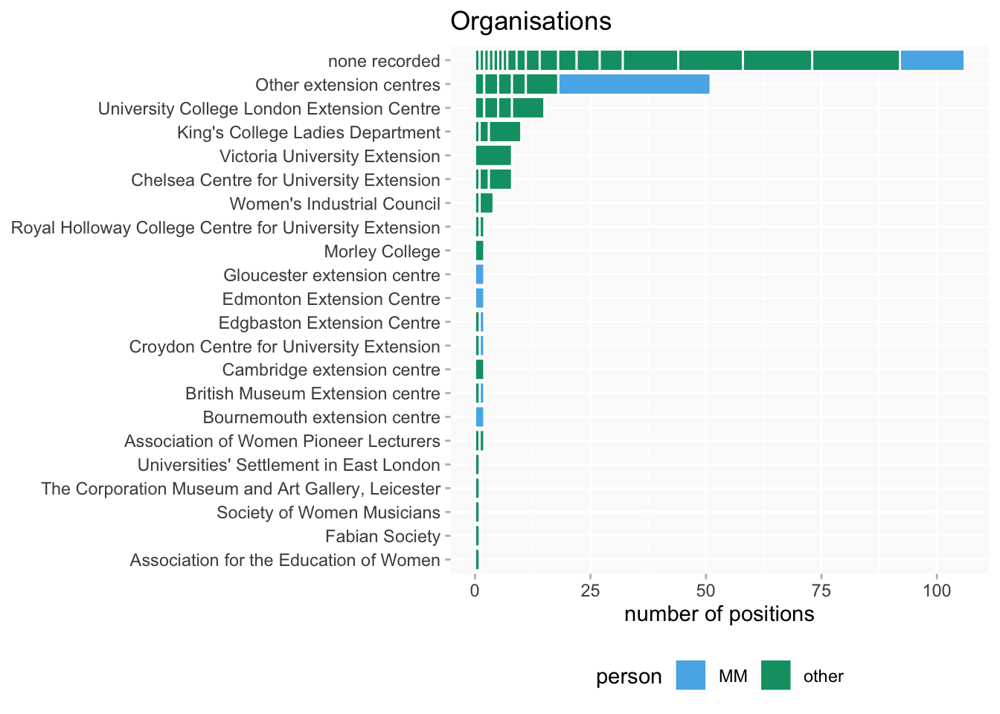
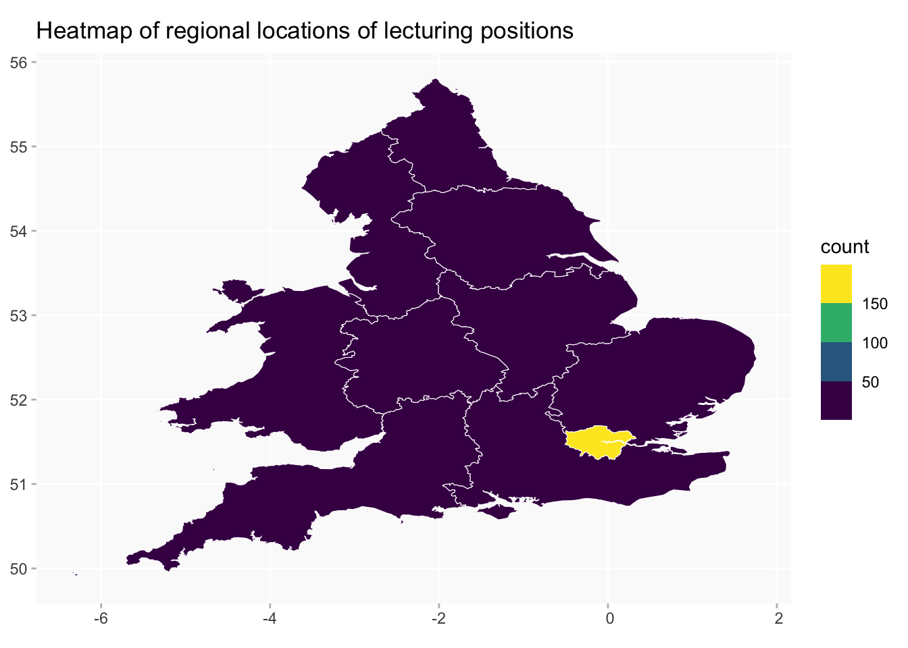

Work activities: Lecturing
ppa
work
Are there trends in freelance vs extension lecturing?
Wikibase queries
Notes
I’ve added spoke at data for some comparisons, but only for the women in this lecturer subset, not the whole lot.
updates
- added heatmap of regional distribution of posts; and a heatmap excluding London
- added tables of the counts in the heatmap
Overview
Numbers of freelance/extension are nearly the same. A few freelance lecturerships are undated; these will be ignored in subsequent charts.
broad chronology of extension/freelance
- everyone
- excluding Margaret Murray (!)

- both types of lecturing plus
spoke at

Timelines of positions per decade
the one without MM; mainly affects 1920s and 1930s
Women
MM is the most obvious challenge for saying anything about general trends, but freelance lecturing is also highly concentrated around two women, Jane Ellen Harrison and Helen Mary Tirard (perhaps especially the latter).
including spoke at this time
MM is still way out ahead, but some women (eg Ada Goodrich-Fraser) are rather differently placed when this is included.
timeline chart for the individuals

a bit more crowded when spoke at is added

Organisations
“Other extension centres” groups together extension centres that appear only once (51 at time of writing).

As I did previously with events, I though I’d take a look at the distribution of individuals across organisers.
Although not identifying all the individuals, MM was particularly noticeable in the single-appearance extension centres so that’s highlighted.
(I’ll try out an Observable version of this so all the individuals can be identified in the tooltips.)

Bearing in mind that most freelance lecturing doesn’t have an organisation anyway, there appears to be very little overlap between organisers of freelance and spoke at.
Regions
(excluding spoke at)
caveats
- some positions didn’t have enough information recorded to look for a location
- some potentially mappable posts in the UK failed to be mapped, because they didn’t have location information to link to on their pages.
- it’s possible in some cases to look for information on wikidata instead, but that tends to be rather unrewarding (compared to the extra work involved)
Some of the numbers beyond London and the south east are very small. (None in N-E England or Scotland, and only one in Wales.)
locations come from one of two possible sources:
- look for a location P2 for the position on the person page
- if there isn’t, look for a location P2 for the organising/employing organisation
The latter may not always be a precisely accurate address for the place where the work actually happened, but only a minority of positions have a direct location, and the organisation location should normally be accurate enough for aggregated analysis.


As tables
| regionLabel | n |
|---|---|
| East Midlands | 4 |
| East of England | 11 |
| London (region) | 136 |
| North East England | 1 |
| North West England | 11 |
| South East England | 31 |
| South West England | 9 |
| Wales | 1 |
| West Midlands | 5 |
| Yorkshire and the Humber | 4 |
A breakdown of the London postcode areas.
(I’ll need to look into “London” and “Greenwich”; could be pointing to some issues with data processing.)
| area | n |
|---|---|
| Greenwich | 1 |
| London | 1 |
| London E | 2 |
| London N | 5 |
| London NW | 1 |
| London SE | 5 |
| London SW | 14 |
| London W | 16 |
| London WC | 91 |
Table
This doesn’t include the spoke at data.